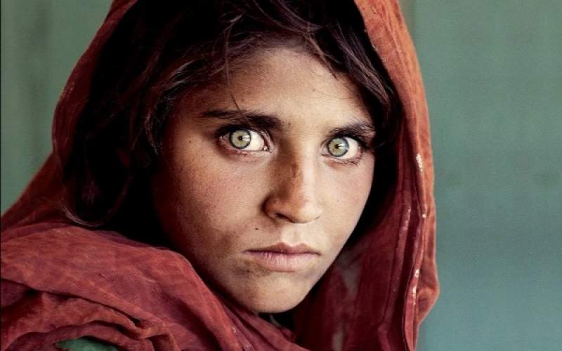

Who Am I?
I am Roqiya Pirzadeh, a passionate historian and researcher. A 22-year-old girl who, despite all the challenges, has a deep passion for analyzing and exploring the ancient history of Afghanistan. Alongside work, studies, and everyday life, she always holds a special place for the interpretation and understanding of Afghanistan’s rich and ancient past.My fascination with the past drives me to uncover stories and connect them to our modern world.
With a love for exploring ancient civilizations and diving deep into historical archives, I aim to bring forgotten stories to life through engaging and creative perspectives.
As a historian in Afghanistan, I face limited access to historical archives and resources due to political instability and ongoing conflicts. Social expectations often discourage women from working in academia or history, and there is a constant struggle to be taken seriously in a male-dominated field. Language barriers and a lack of funding for historical research add further obstacles to my path. Despite these challenges, my passion for uncovering the past is unwavering. As an Afghan girl, I bring a fresh perspective and a deep cultural understanding to historical narratives. My ability to connect with communities, preserve oral histories, and highlight lesser-known stories empowers me to be a voice for my heritage. Resilience and determination drive me forward, knowing that every story I uncover contributes to a richer, more inclusive history.